Introducing Stool & Co
The bathroom essential.
Reimagined.
Tired of swapping toilet rolls? Bring your everyday bathroom essentials together with a multifunctional toilet stool, integrated storage and dispensing system.
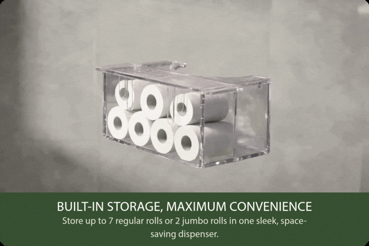
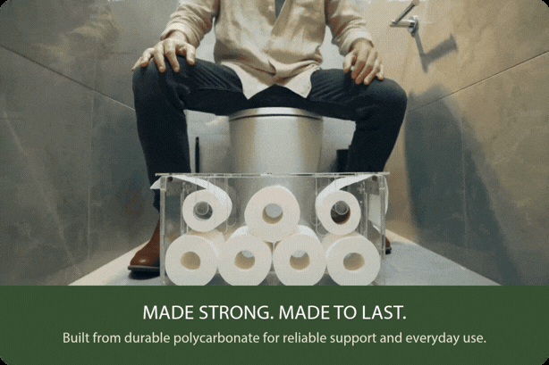
Natural posture. Tidier space. Smarter design.
A comfortable footrest and a built-in dispenser, all in one seamless design.
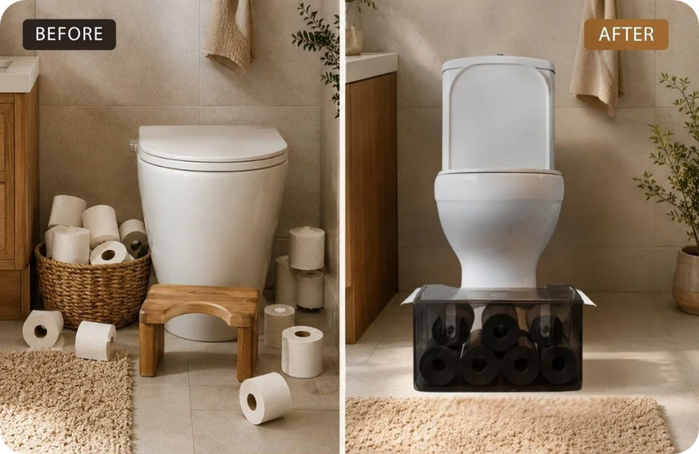
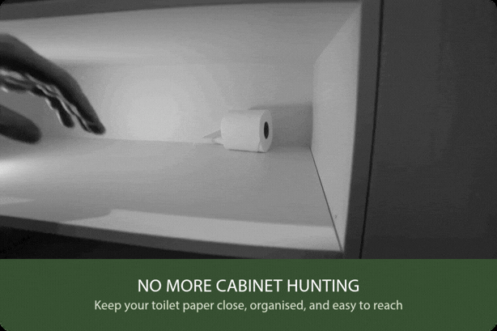
Simple access. Smarter dispensing.
Pull toilet paper smoothly from either side, while the built-in tensioner keeps the roll in place and prevents it from rolling back.
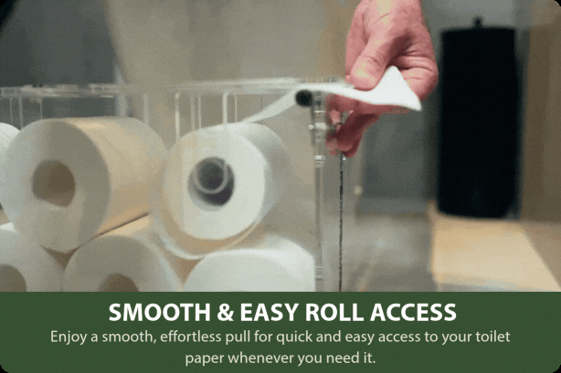
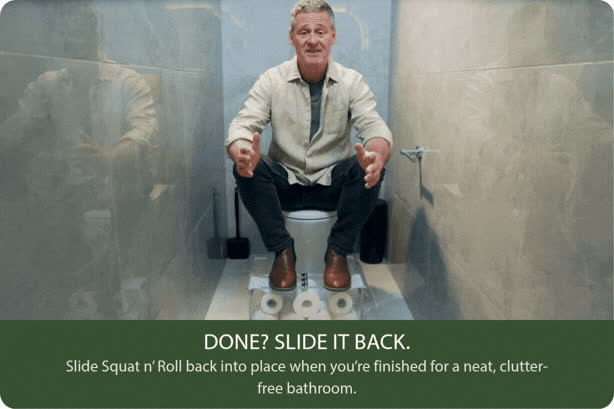
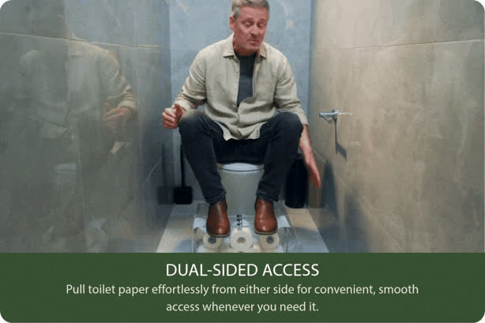
Built-in cutter
Extended 2 cm on each side, the lid shields hanging paper from dust and foot splashes, while serrated edges ensure a clean tear in one pull.
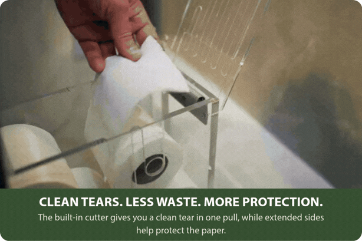
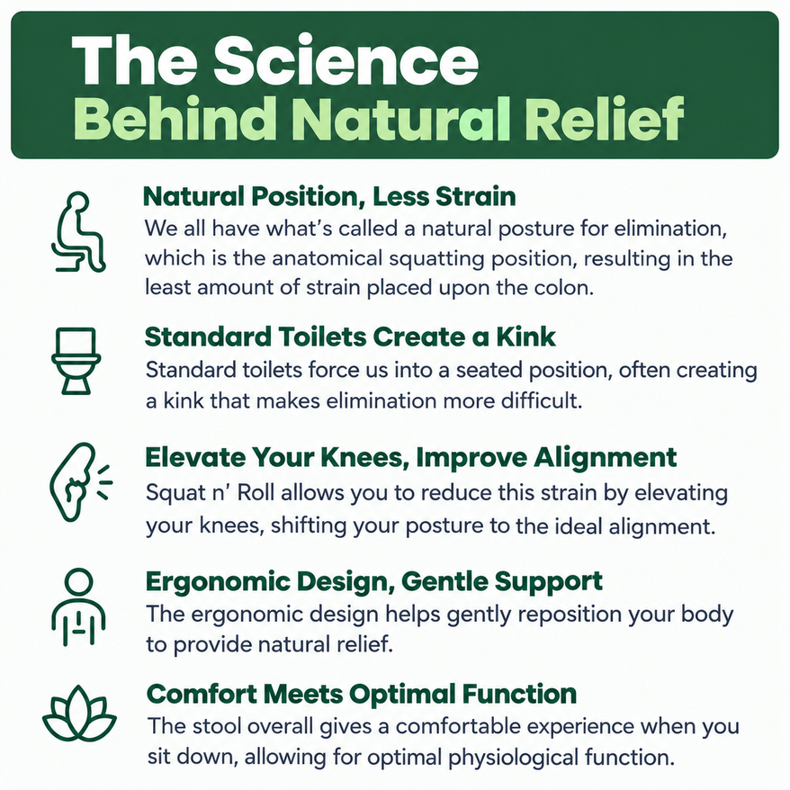
Designed with cleanliness in mind
The sealed, overlapping lid keeps toilet paper dry and clean, preventing leaks from getting inside the stool.


Natural squatting position for
everyday comfort
Squat n’ Roll encourages a natural squatting position designed with everyday comfort in mind, with a comfortable, thoughtfully designed footrest.
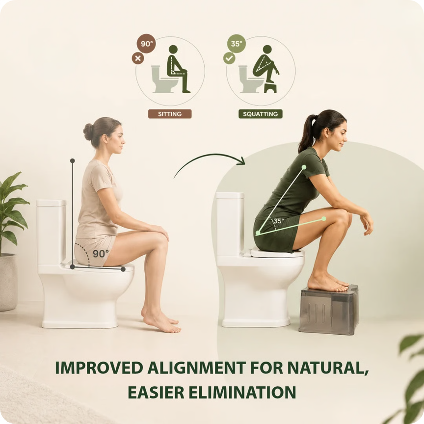
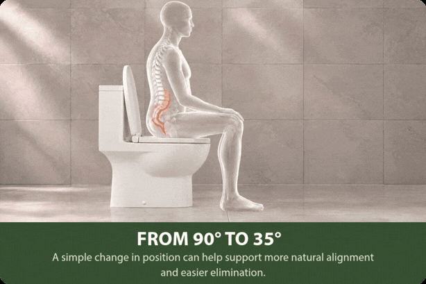
The product that replaces it all.
One stool. Zero clutter.
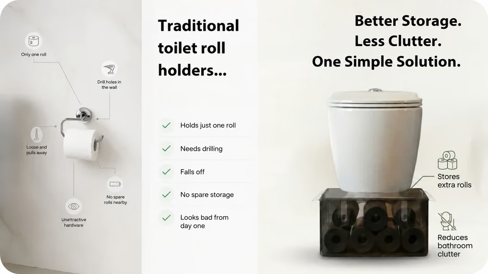
Specs
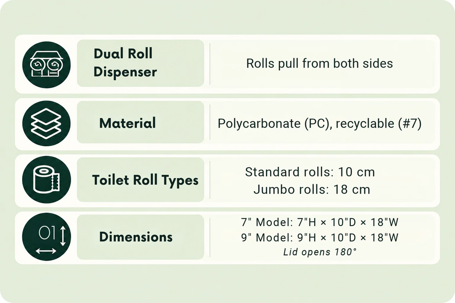
Stool sizes & capacity

Colour options
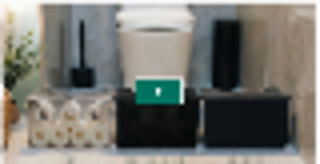
Clear — an open, light finish that keeps your essentials in view.